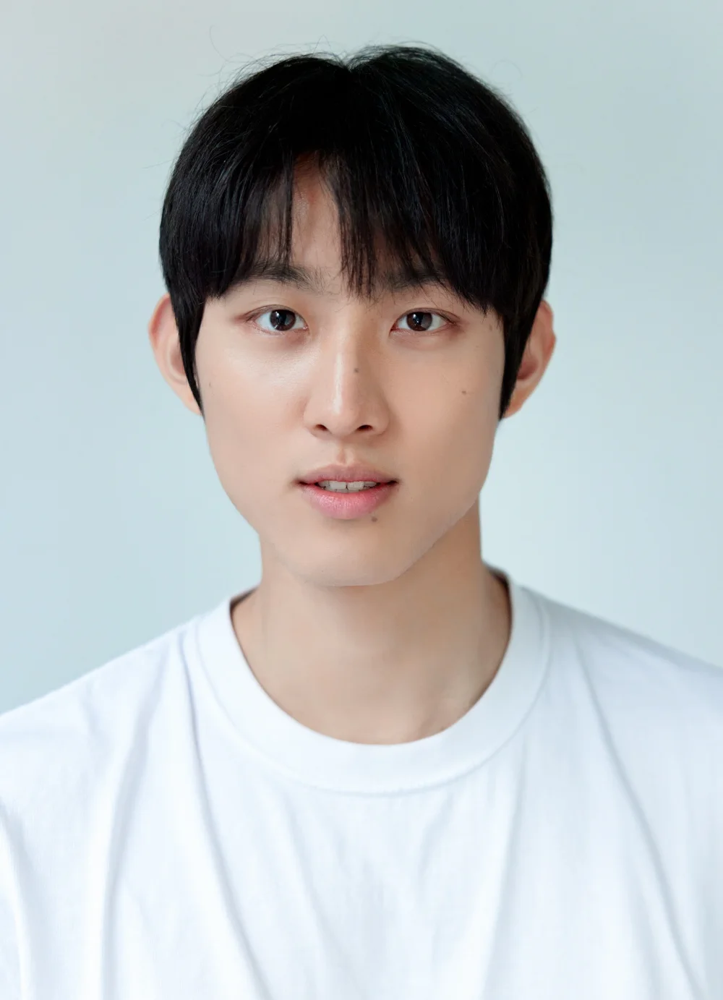

AI EDUCATION & PROJECT COACHING이지환 / AI EDUCATOR
AI를 배우고,
현장에서 쓰다.
가능성을 이해하는 교육에서,
직접 만들어보는 프로젝트까지.
조직의 다음 경험을 함께합니다.
+
+
02 / BUILD
LEE JIHWAN
AI EDUCATOR FIELD / NOTES001—036
Learn.
Build.
Apply.
A PRACTICE IN POSSIBILITIES.
SCROLL TO EXPLORE ↓배움과 실행 사이, 그 현장의 기록.2024 — 2026
✳︎다양한 조직.
서로 다른 과제.
하나의 방향, AI의 실무 활용.
제공 이력 기준 · 진행 일정 포함
01 / SELECTED WORK2025 — 2026
서로 다른 현장에,
맞는 AI 경험을.
대상과 업무가 달라지면, 배움의 방식도 달라집니다.
조직과 사람을 중심에 둔 교육 이력입니다.
AI × FINANCE01 / 04
A new start.
A new mindset.
새로운 시작을 위한 AI 리터러시↗
신입사원 교육 · 기술강사한국투자증권
신입사원 대상 AI 교육
2026.10
12 HOURSAI × LEADERSHIP02 / 04
Lead the
next.
리더의 다음 관점을 열다↗
리더 교육 · 기술강사S-OIL
리더 대상 AI 교육
2026.09
6 HOURSAI × WORKFLOW03 / 04
INPUT✳︎NEW POSSIBILITIES ↗
Work,
reimagined.
일하는 방식에 새로운 가능성을↗
업무 활용 교육 · 기술강사롯데월드 서울사업장
ChatGPT Work 활용 교육
2026.09
8 HOURSAI × CREATIVITY04 / 04
Aa✳︎↗
Beyond
the frame.
이미지와 영상, 표현의 확장↗
생성형 콘텐츠 교육 · 기술강사동아일보
생성형 AI 이미지·영상 교육
2025.05
— 2025.0802 / PROJECT COACHINGLEARNING → MAKING
팀이 직접
만드는 과정까지.
아이디어가 프로젝트가 되고,
배움이 팀의 경험으로 남도록.
해커톤과 프로젝트 현장에서 함께합니다.
↗
IDEAS ARE JUST THE BEGINNING.01 / SK E&S프로젝트 멘토링
대상 팀 배출↗
AI 프로젝트 멘토링 코치
2025.06POSCO해커톤 코칭
우수상 팀 2회 배출↗
포스코 해커톤 전문 코치 · 총 3회 진행
2025.06 · 3개년 진행: 2024 / 2025 / 2026SHINHAN DS해커톤 코칭
우수상 팀 배출↗
신한DS 해커톤 전문 코치
2025.05위 성과는 코칭·멘토링에 참여한 팀의 우수상 수상 이력입니다.
RECENT FIELD NOTE한국지역난방공사 AI Pioneer 해커톤 교육
2026.10.26 — 11.04 · 35H 03 / EXPERTISEA CONNECTED PRACTICE
배움에서
실행으로.
조직에 필요한 AI 경험을
네 가지 영역으로 연결합니다.
04 / EXPERIENCE ARCHIVEEVERY EXPERIENCE COUNTS.
현장의 기록.
강의, 코칭, 그리고 실무.
차곡차곡 쌓아온 경험을 살펴보세요.
제공된 이력 기준으로 정리
05 / THE PRACTICEALWAYS IN THE FIELD.
기술의 가능성을,
사람의 경험으로.
이지환, AI Educator.
조직의 구성원이 AI를 이해하고 활용할 수 있도록 교육합니다. 강의뿐 아니라 해커톤과 프로젝트 멘토링을 통해 팀의 실습 과정을 함께합니다.
EDUCATION동국대학교
컴퓨터정보통신공학과 · 학사 졸업
BEFORE THE FIELD NOTES블록체인 지갑 서비스 운영 PM
(주)페이캄 2021.07 — 11